Fish icon collection
290 left-facing SVGs. Flat muted colors, creamy bellies, simple splotches, transparent backgrounds.
These are approximate UI illustrations, not identification references. The original rainbow trout is preserved.
Search common name, scientific name, or filename Largemouth bass micropterus_salmoides.svg Smallmouth bass micropterus_dolomieu.svg 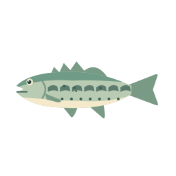
Spotted bass micropterus_punctulatus.svg 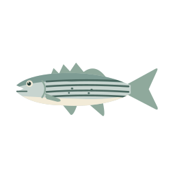
Striped bass morone_saxatilis.svg White bass morone_chrysops.svg 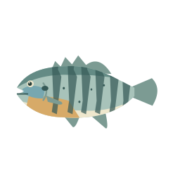
Bluegill lepomis_macrochirus.svg 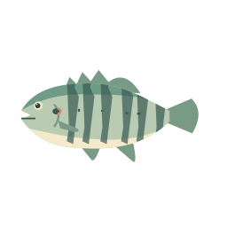
Redear sunfish lepomis_microlophus.svg 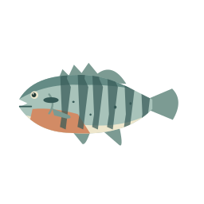
Redbreast sunfish lepomis_auritus.svg 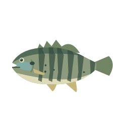
Green sunfish lepomis_cyanellus.svg 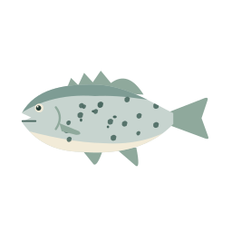
Black crappie pomoxis_nigromaculatus.svg 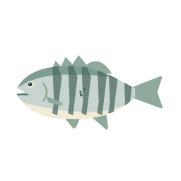
White crappie pomoxis_annularis.svg 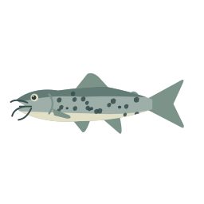
Channel catfish ictalurus_punctatus.svg 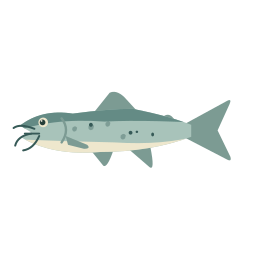
Blue catfish ictalurus_furcatus.svg 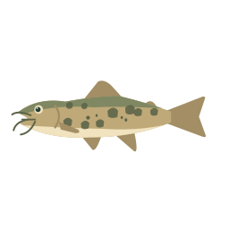
Flathead catfish pylodictis_olivaris.svg 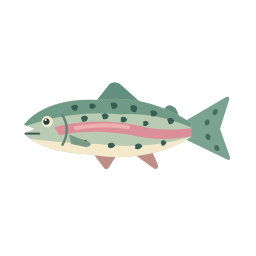
Rainbow trout oncorhynchus_mykiss.svg 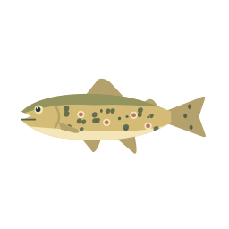
Brown trout salmo_trutta.svg 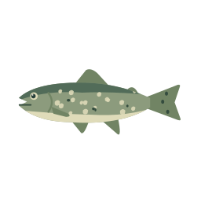
Brook trout salvelinus_fontinalis.svg 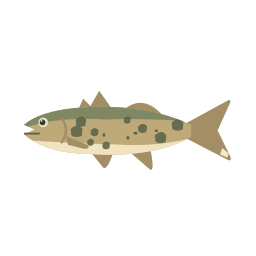
Walleye sander_vitreus.svg 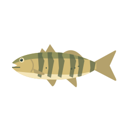
Yellow perch perca_flavescens.svg 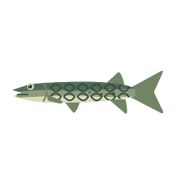
Chain pickerel esox_niger.svg 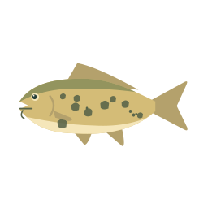
Common carp cyprinus_carpio.svg 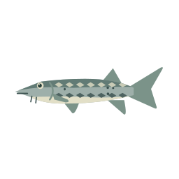
Atlantic sturgeon acipenser_oxyrinchus_oxyrinchus.svg 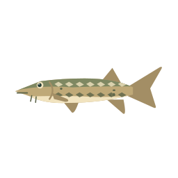
Lake sturgeon acipenser_fulvescens.svg 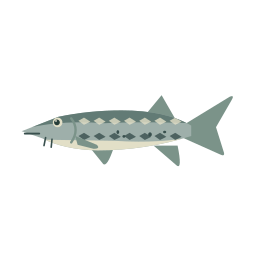
Shortnose sturgeon acipenser_brevirostrum.svg 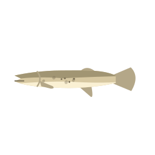
Southern cavefish typhlichthys_subterraneus.svg 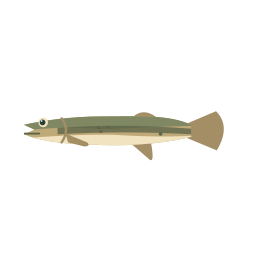
Swampfish chologaster_cornuta.svg 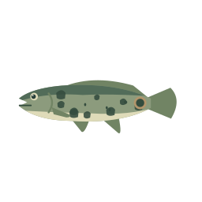
Bowfin amia_calva.svg 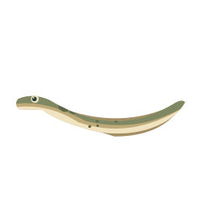
American eel anguilla_rostrata.svg 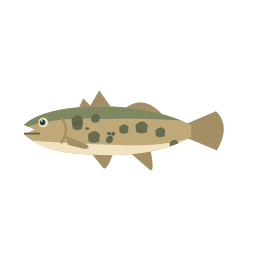
Pirate perch aphredoderus_sayanus.svg Brook silverside labidesthes_sicculus.svg 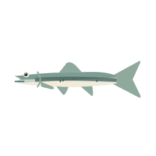
Inland silverside menidia_beryllina.svg 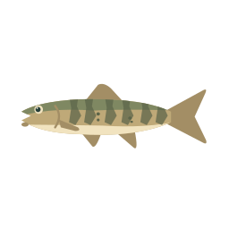
Alabama hog sucker hypentelium_etowanum.svg Apalachicola redhorse apalachicola_redhorse.svg 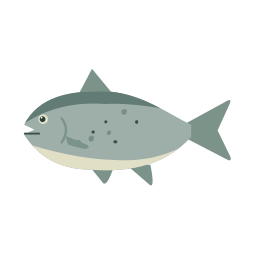
Black buffalo ictiobus_niger.svg 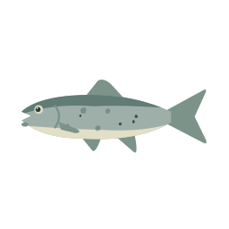
Black redhorse moxostoma_duquesnei.svg 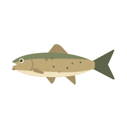
Blacktail redhorse moxostoma_poecilurum.svg Brassy jumprock brassy_jumprock.svg Creek chubsucker erimyzon_oblongus.svg 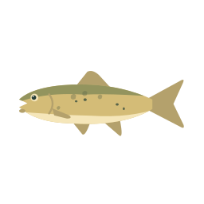
Golden redhorse moxostoma_erythrurum.svg 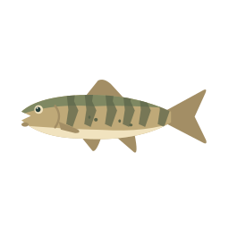
Greater jumprock moxostoma_lachneri.svg 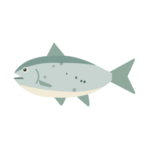
Highfin carpsucker species highfin_carpsucker_species.svg Lake chubsucker erimyzon_sucetta.svg Northern hog sucker hypentelium_nigricans.svg Notchlip redhorse moxostoma_collapsum.svg Quillbacks quillbacks.svg River carpsucker carpiodes_carpio.svg River redhorse moxostoma_carinatum.svg Robust redhorse moxostoma_robustum.svg Sicklefin redhorse sicklefin_redhorse.svg 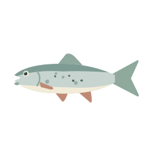
Silver redhorse moxostoma_anisurum.svg Smallmouth buffalo ictiobus_bubalus.svg Spotted sucker minytrema_melanops.svg Striped jumprock moxostoma_rupiscartes.svg 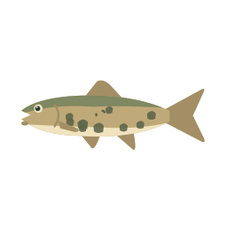
White sucker catostomus_commersoni.svg Alabama bass micropterus_henshalli.svg 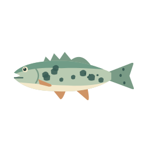
Altamaha Bass micropterus_calliurus.svg 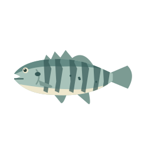
Banded sunfish enneacanthus_obesus.svg 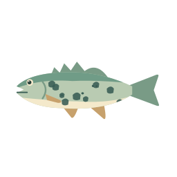
Bartram's bass micropterus_pucpuggy.svg 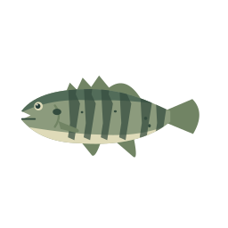
Blackbanded sunfish enneacanthus_chaetodon.svg 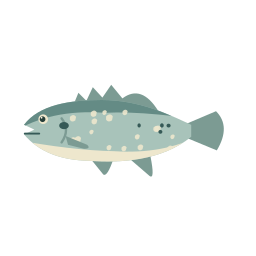
Bluespotted sunfish enneacanthus_gloriosus.svg 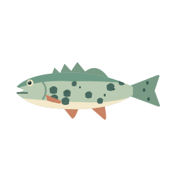
Chattahoochee Bass micropterus_chattahoochae.svg 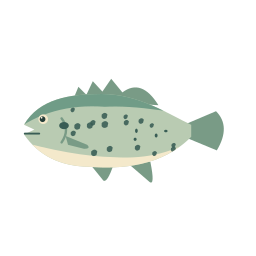
Dollar sunfish lepomis_marginatus.svg 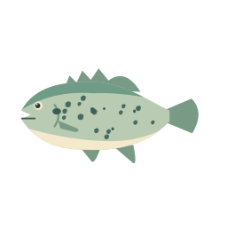
Flier centrarchus_macropterus.svg 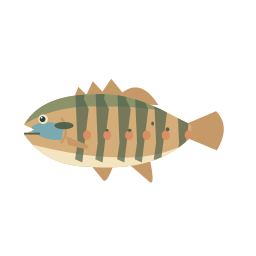
Longear sunfish lepomis_megalotis.svg 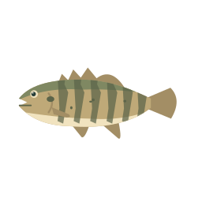
Mud sunfish acantharchus_pomotis.svg 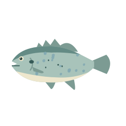
Orangespotted sunfish lepomis_humilis.svg Pumpkinseed lepomis_gibbosus.svg Redeye bass micropterus_coosae.svg 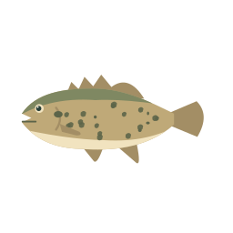
Rock bass ambloplites_rupestris.svg 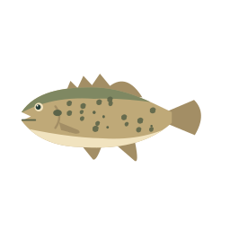
Shadow bass ambloplites_ariommus.svg 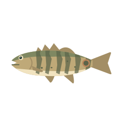
Shoal bass micropterus_cataractae.svg Spotted sunfish lepomis_punctatus.svg Spotted sunfish integrade spotted_sunfish_integrade.svg Suwannee bass micropterus_notius.svg Tallapoosa bass micropterus_tallapoosae.svg Warmouth lepomis_gulosus.svg Pacu species pacu_species.svg Oscar astronotus_ocellatus.svg Tilapia species tilapia_species.svg Alabama shad alosa_alabamae.svg Alewife alosa_pseudoharengus.svg American shad alosa_sapidissima.svg Blueback herring alosa_aestivalis.svg Gizzard shad dorosoma_cepedianum.svg Hickory shad alosa_mediocris.svg Skipjack herring alosa_chrysochloris.svg Threadfin shad dorosoma_petenense.svg Banded sculpin cottus_carolinae.svg Banded sculpin species banded_sculpin_species.svg Chattahoochee sculpin cottus_chattahoochee.svg Coosa banded sculpin cottus_carolinae_zopherus.svg Ridge and Valley sculpin ridge_and_valley_sculpin.svg Savannah sculpin savannah_sculpin.svg Smoky sculpin smoky_sculpin.svg Tallapoosa sculpin cottus_tallapoosae.svg "Coosa" chub (fall line chub complex) coosa_chub_fall_line_chub_complex.svg Alabama shiner cyprinella_callistia.svg Altamaha shiner cyprinella_xaenura.svg Apalachee shiner pteronotropis_grandipinnis.svg Bandfin shiner luxilus_zonistius.svg Bannerfin shiner cyprinella_leedsi.svg Bigeye chub hybopsis_amblops.svg Blacktail shiner cyprinella_venusta.svg Blacktip shiner lythrurus_atrapiculus.svg Blotched chub erimystax_insignis.svg Blue shiner cyprinella_caerulea.svg Bluefin stoneroller campostoma_pauciradii.svg Bluehead chub nocomis_leptocephalus.svg Bluenose shiner pteronotropis_welaka.svg Bluestripe shiner cyprinella_callitaenia.svg Bluntnose minnow pimephales_notatus.svg Broadstripe shiner pteronotropis_euryzonus.svg Bullhead minnow pimephales_vigilax.svg Burrhead shiner notropis_asperifrons.svg Central stoneroller campostoma_anomalum.svg Coastal chub hybopsis_winchelli.svg Coastal shiner notropis_petersoni.svg Coosa shiner notropis_xaenocephalus.svg Creek chub semotilus_atromaculatus.svg Dixie chub semotilus_thoreauianus.svg Dusky shiner notropis_cummingsae.svg Eastern silvery minnow hybognathus_regius.svg Emerald shiner notropis_atherinoides.svg Etowah chub etowah_chub.svg Fathead minnow pimephales_promelas.svg Fatlips minnow phenacobius_crassilabrum.svg Fieryblack shiner cyprinella_pyrrhomelas.svg Flame chub hemitremia_flammea.svg Golden shiner notemigonus_crysoleucas.svg Goldfish carassius_auratus.svg Grass carp ctenopharyngodon_idella.svg Highfin shiner notropis_altipinnis.svg Highscale shiner notropis_hypsilepis.svg Ironcolor shiner notropis_chalybaeus.svg Largescale stoneroller campostoma_oligolepis.svg Lined chub hybopsis_lineapunctata.svg Longjaw minnow notropis_amplamala.svg Longnose dace rhinichthys_cataractae.svg Longnose shiner notropis_longirostris.svg Longnose shiner species longnose_shiner_species.svg Lowland shiner pteronotropis_stonei.svg Metallic shiner metallic_shiner.svg Mimic shiner notropis_volucellus.svg Mirror shiner notropis_spectrunculus.svg Mountain shiner lythrurus_lirus.svg Ocmulgee shiner cyprinella_callisema.svg Popeye shiner notropis_ariommus.svg Pretty shiner lythrurus_bellus.svg Pugnose minnow opsopoeodus_emiliae.svg Rainbow shiner notropis_chrosomus.svg Red shiner cyprinella_lutrensis.svg Redeye chub notropis_harperi.svg Riffle minnow phenacobius_catostomus.svg River chub nocomis_micropogon.svg Rosyface chub hybopsis_rubrifrons.svg Rosyside dace clinostomus_funduloides.svg Rough shiner notropis_baileyi.svg Sandbar shiner notropis_scepticus.svg Scarlet shiner lythrurus_fasciolaris.svg Silver chub macrhybopsis_storeriana.svg Silver shiner notropis_photogenis.svg Silverstripe shiner notropis_stilbius.svg Spotfin shiner cyprinella_spiloptera.svg Spottail shiner notropis_hudsonius.svg Stargazing minnow phenacobius_uranops.svg Steelcolor shiner cyprinella_whipplei.svg Striped shiner luxilus_chrysocephalus.svg Taillight shiner notropis_maculatus.svg Tallapoosa shiner cyprinella_gibbsi.svg Telescope shiner notropis_telescopus.svg Tennessee dace phoxinus_tennesseensis.svg Tennessee shiner notropis_leuciodus.svg Tricolor shiner cyprinella_trichroistia.svg Warpaint shiner luxilus_coccogenis.svg Weed shiner notropis_texanus.svg Western blacknose dace rhinichthys_obtusus.svg White cloud mountain minnow tanichthys_albonubes.svg Whitefin shiner cyprinella_nivea.svg Whitetail shiner cyprinella_galactura.svg Yellowfin shiner notropis_lutipinnis.svg Banded pygmy sunfish elassoma_zonatum.svg Bluebarred pygmy sunfish elassoma_okatie.svg Everglades pygmy sunfish elassoma_evergladei.svg Gulf coast pygmy sunfish elassoma_gilberti.svg Okefenokee pygmy sunfish elassoma_okefenokee.svg Muskellunge esox_masquinongy.svg Northern pike esox_lucius.svg Redfin pickerel esox_americanus.svg Banded killifish fundulus_diaphanus.svg Banded topminnow fundulus_cingulatus.svg Blackspotted topminnow fundulus_olivaceus.svg Bluefin killifish lucania_goodei.svg Golden topminnow fundulus_chrysotus.svg Lined topminnow fundulus_lineolatus.svg Northern studfish fundulus_catenatus.svg Pygmy killifish leptolucania_ommata.svg Rainwater killifish lucania_parva.svg Redface topminnow fundulus_rubrifrons.svg Russetfin topminnow fundulus_escambiae.svg Southern studfish fundulus_stellifer.svg Stippled studfish fundulus_bifax.svg Freshwater goby ctenogobius_shufeldti.svg Mooneye hiodon_tergisus.svg Black bullhead ameiurus_melas.svg Black madtom noturus_funebris.svg Brown bullhead ameiurus_nebulosus.svg Coosa madtom coosa_madtom.svg Flat bullhead ameiurus_platycephalus.svg Freckled madtom noturus_nocturnus.svg Margined madtom noturus_insignis.svg Mountain madtom noturus_eleutherus.svg Snail bullhead ameiurus_brunneus.svg Speckled madtom noturus_leptacanthus.svg Spotted bullhead ameiurus_serracanthus.svg Tadpole madtom noturus_gyrinus.svg White catfish ameiurus_catus.svg Yellow bullhead ameiurus_natalis.svg Florida gar lepisosteus_platyrhincus.svg Longnose gar lepisosteus_osseus.svg Spotted gar lepisosteus_oculatus.svg White bass X striped bass hybrid white_bass_x_striped_bass_hybrid.svg White perch morone_americana.svg Yellow bass morone_mississippiensis.svg Mountain mullet agonostomus_monticola.svg Striped mullet mugil_cephalus.svg Amber darter percina_antesella.svg Backwater darter etheostoma_zonifer.svg Banded darter etheostoma_zonale.svg Black darter etheostoma_duryi.svg Blackbanded darter percina_nigrofasciata.svg Blueside darter etheostoma_jessiae.svg Bridled darter percina_kusha.svg Bronze darter percina_palmaris.svg Brown darter etheostoma_edwini.svg Cherokee darter etheostoma_scotti.svg Christmas darter etheostoma_hopkinsi.svg Coldwater darter etheostoma_ditrema.svg Conasauga logperch percina_jenkinsi.svg Coosa darter etheostoma_coosae.svg Dusky darter percina_sciera.svg Etowah darter etheostoma_etowahae.svg Freckled darter percina_lenticula.svg Gilt darter percina_evides.svg Goldline darter percina_aurolineata.svg Goldstripe darter etheostoma_parvipinne.svg Greenbreast darter etheostoma_jordani.svg Greenfin darter etheostoma_chlorobranchium.svg Greenside darter etheostoma_blennioides.svg Gulf darter etheostoma_swaini.svg Halloween darter percina_crypta.svg Holiday darter complex holiday_darter_complex.svg Lipstick darter etheostoma_chuckwachatte.svg Logperch percina_caprodes.svg Mobile logperch percina_kathae.svg Muscadine darter percina_smithvanizi.svg Olive darter percina_squamata.svg Rainbow darter etheostoma_caeruleum.svg Redline darter etheostoma_rufilineatum.svg Redline darter species redline_darter_species.svg River darter percina_shumardi.svg Rock darter etheostoma_rupestre.svg Sauger sander_canadensis.svg Savannah darter etheostoma_fricksium.svg Sawcheek darter etheostoma_serrifer.svg Snail darter percina_tanasi.svg Speckled darter etheostoma_stigmaeum.svg Swamp darter etheostoma_fusiforme.svg Tallapoosa darter etheostoma_tallapoosae.svg Tangerine darter percina_aurantiaca.svg Tennessee darter etheostoma_tennesseense.svg Tessellated darter etheostoma_olmstedi.svg Trispot darter etheostoma_trisella.svg Tuckasegee darter etheostoma_gutselli.svg Turquoise darter etheostoma_inscriptum.svg Wounded darter etheostoma_vulneratum.svg American brook lamprey lampetra_appendix.svg Chestnut lamprey ichthyomyzon_castaneus.svg Least brook lamprey lampetra_aepyptera.svg Mountain brook lamprey ichthyomyzon_greeleyi.svg Ohio lamprey ichthyomyzon_bdellium.svg Sea lamprey petromyzon_marinus.svg Southern brook lamprey ichthyomyzon_gagei.svg Eastern mosquitofish gambusia_holbrooki.svg Least killifish heterandria_formosa.svg Sailfin molly poecilia_latipinna.svg Western mosquitofish gambusia_affinis.svg Paddlefish polyodon_spathula.svg Freshwater drum aplodinotus_grunniens.svg Swamp eel swamp_eel.svg Eastern mudminnow umbra_pygmaea.svg